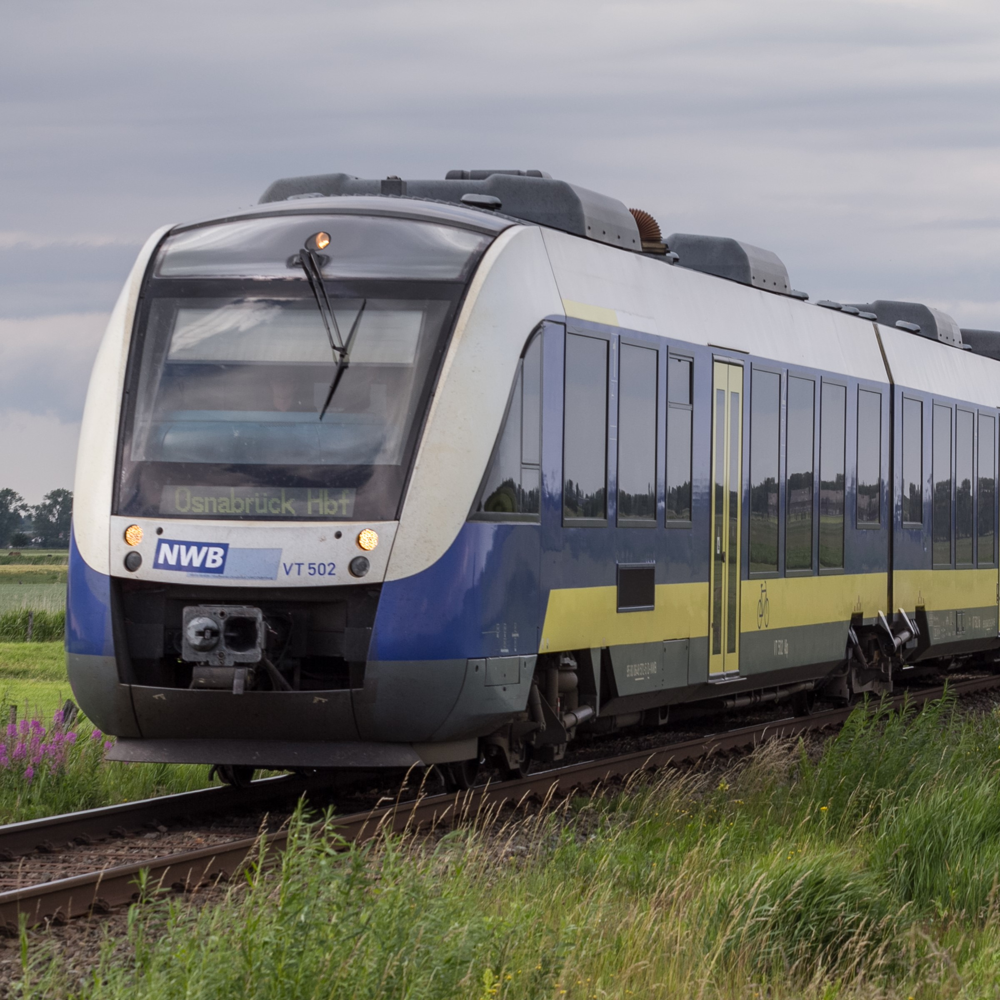

Използвани материали
*всички файлове са раздели по следния начин:
images:
-icons
-logos
-images
Материали, взети от Wikipedia Commons (wikipedia image collection)

Photo by Sorovas, Own work

Photo by Maria Feofilova, Own work
Photo by NAC, Own work, CC BY-SA 3.0
Photo by Superalbs, Own work, CC BY-SA 4.0

Photo by M4ys3R, TrainPix
Photo by Kecko, CC BY 2.0

Photo by Ivar Leidus, Own work, CC BY-SA 3.0 ee
Photo by Danazar, Own work, CC BY-SA 4.0
Photo by "My another account", CC0
Photo by JoachimKohlerBremen, Own work, CC BY-SA 4.0
Иконки и малки изображения, Flaticon (by Freepik)
Flaticonaticon Flaticon
Други снимки
bdz75travel - Yulian Panov
bdz75celebr - сайт economy.bg
bdz75front-vqra - сайт Вяра
talent interiro - by https://www.google.com/url?sa=i&url=https%3A%2F%2Fotrain.railfans.ca%2Ftrains%2Fbombardier-talent&psig=AOvVaw3i0XeJjxm70aLXCFOPohDp&ust=1729773080907000&source=images&cd=vfe&opi=89978449&ved=0CAMQjB1qFwoTCPDt1oHBpIkDFQAAAAAdAAAAABAE bombandier talent - same site
Материали, взети от Freepik
Freepik Shinkasen train (AI generated, file name: shinkasen)
Шрифтове
Google Fonts Montserrat, Inter, Comfortaa
Цветове
#ffffff - white
#181818 - Tharmar Black
#F18701 - Tangerine
e-mail: iliyangeorgiev28@itpg-varna.bg